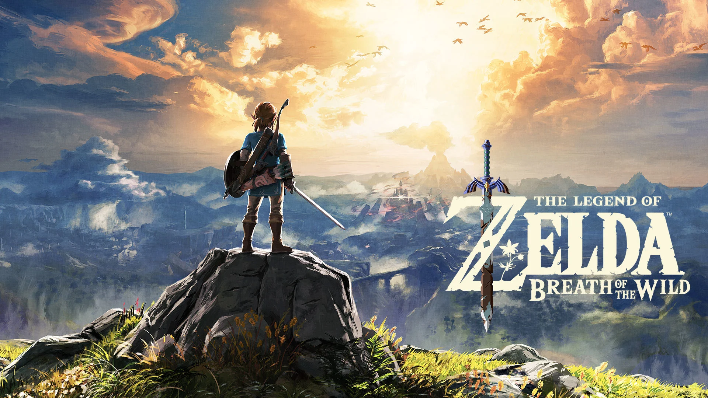
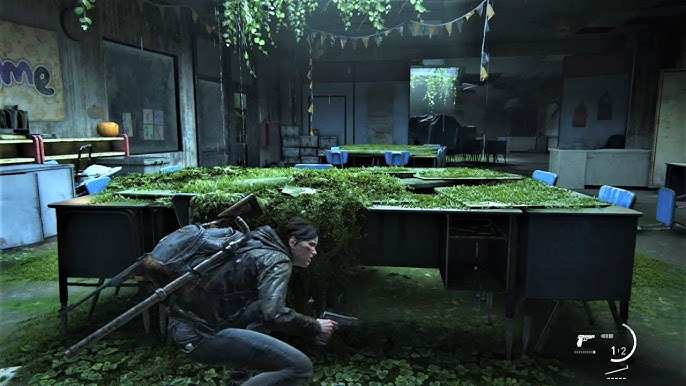

Top 10 Video Games of All Time
I've been a pretty big gamer for most of my life. My first gaming console was a PlayStation 1 that I got as a child, and ever since then gaming has been a big part of my life. I've owned every single generation of the PlayStation, and many Nintendo and retro consoles. I love to play old and modern games, and all different kinds of genres. This list is my personal 10 favorite games I've ever played, and each of these games holds a special place in my heart. Many of these games are nostalgic to me, and some are games I've played fairly recently. Also, I am not a fan of turn-based RPGs, or online games/MMOs, so keep that in mind while reading.
Honorable mention:
The Legend of Zelda: Breath of the Wild
Nintendo Switch

I am a huge Zelda fan. To make this list consistent and fair, I am limiting myself to only include one game per franchise. Otherwise, many different Zelda games will probably take up several spots on the list. And it doesn't seem right to have a bunch of Zelda games competing when so many of them are so similar. Maybe one day I will do a Top 10 Zelda games list, but for now this list will only include one 3D Zelda and one 2D Zelda. So unfortunately, The Legend of Zelda: Breath of the Wild won't make the list. This was the first Zelda game that was released after I became a fan of the series, and I closely followed the rollout and lead up of the game. I watched all the trailers and the E3 livestreams of the game, and this game was the reason I bought a Nintendo Switch the day it was released. The freedom this game gives you is incredible, and I will never forget the amazing experience of playing this game for the first time and stepping out of the beginning cave and out into the Great Plateau.
Number 10: Red Dead Redemption
PlayStation/Xbox/Steam

The best video game franchise out there about the wild west, this game really makes you feel like a badass gunslinger. The combat with the guns and Dead-Eye is really unique and fun to master. John Marsden is a touch, fearless protagonist, with an iconic raspy voice and attitude. The story of a man trying to save his family while confronting his outlaw past and be a better person and father is really special.
Most people would probably say that the second game is better than the first. It certainly is bigger and a lot more expanded upon. The second game is probably the most intricate single player game ever made. The amount of detail in everything from the wildlife and the physics is stunning, and it really feels like you're playing a movie. Maybe a little bit too much. And the story is something truly special; what they accomplished with Arthor is amazing, and probably the best video game voiceover work ever. Both games are great, but the reason I like the first one more is because of the gameplay. In the second game, it feels too cinematic, and the game feels too easy because of it. There isn't an option to change the difficulty, and with how easy it is to make and or steal money, you're always going to have your dead eye gauge full, making fighting a breeze. The first game, on the other hand, has a hardcore difficulty option, which I found to be perfect. And the art style, story, music and atmosphere of the first game are excellent too. I went out of my way to get about 99% completion, and that is something I would could never do with the second game; it is far too big, and so much of the game is unenjoyable in my opinion, like the fishing and gambling.
Number 9: God of War Ragnarök
PlayStation 5/Steam

The God of War franchise has the most intricate and satisfying combat in any game I've ever played. That has to be the best part of this game, and what stands out to me the most. The combat has so much depth, and is so intense, brutal, and satisfying. Easy to learn but difficult to master. I also love that there are several different difficulty levels to pick, and the game can be really challenging. I wish more games put more thought into their difficulty levels. The Valkyrie Queen Sigrún boss fight from the first game, and the King Hrólf Kraki fight from the second game are some of the hardest boss fights I've ever fount against. It's so refreshing for a game to be so unforgiving, but also fair. It was really fun to patiently learn the fights and finally beat them after hours of trying.
The story and characters are great too. Kratos is a very quiet character, but over the course of the games he really grows on you. You learn more about him and his past, and he becomes caring, mature, and an absolute badass. And the backdrop of these games being in Norse mythology makes the story so interesting and creative, and the environments and landscapes are truly stunning. The second game is where it really peaks, where you can explore every single one of the nine realms. Odin and Thor make great, complex villains, and the relationship between Kratos and his son is heartwarming and sweet.
Also, Mimir has to be one of the greatest characters from any story ever. He really feels like Kratos' friend and brother. If you don't know who that is, please do yourself a favor and play the game for yourself.
Number 8: The Legend of Zelda: Oracle of Ages/Oracle of Seasons
GameBoy Color

Of course, a 2D Zelda would have to make the list somewhere. And although these are technically two games, there are more like brother and sister games; you must play through both to get to the true final boss. I absolutely love the GameBoy aesthetic and feel. The graphics, art style, and music are such a unique and magical experience. This game is also difficult and unforgiving, especially when it comes to the dungeons and bosses. Modern Zelda games are way too easy nowadays, but this one is just right. Unlike some older 2D Zelda titles, the sword in this game is fast and snappy, and fighting and using the items feels responsive and intuitive. I love equipping both the sword and Roc's cape, so you can hack away with the sword while jumping and gliding around; it just feels so right. I completed a four-heart challenge for this game, and it was hard and insanely fun.
Number 7: Crash Bandicoot N. Sane Trilogy
PlayStation/Xbox/Steam/Switch

Platforming at its absolute greatest. I grew up playing the original Crash games on the PlayStation 1, and I love those games too, but I am picking this remake because it includes all the games together and adds new time relics to Crash 1 and Crash 2. Just moving around and platforming in this game feels great and rewarding. It might seem like a silly game about a cartoon bandicoot, and it certainly is, but it requires some tight and precise movements and skill. I've gotten all the platinum time relics on every level, and it is genuinely probably the hardest thing I have ever done in a video game. The mental flow state and adrenaline you feel as you perfectly speed through all the challenging levels is so satisfying. The rush you get from beating a hard stage is unlike any other game.
And of course the various wacky worlds and level themes are all great. My favorites are the Egyptian pyramid and the jungle levels.
Number 6: Spyro the Dragon
PlayStation 1

Yes, I'm talking about the very first one on the original PlayStation. I played all the PS1 Spyro games as a kid, so they are really nostalgic to me. The vibes of this game are magical, everything from the music to the skyboxes. You play as small, purple dragon as you run around and explore, platform, collect treasure, and save other dragons. It's so dreamlike, peaceful, cozy, and one of a kind. The colors of the skies and the classic PS1 graphics just add to the charm. It's a fairly easy game, but in this case that's a good thing. It's so fun to run around and just explore and chill. And the music is so good, I often listen to the soundtrack while doing homework. I especially love the Dark Hallow level soundtrack, which is an amazing but quick level that you'll be in for a few minutes, but has the best music in the game. This is definitely the kind of game to play if you need to unwind and relax.
The second and third Spyro are also really good, but they have too many minigames that are not as good as the main platforming. The first game is 100% running around platforming, and it just has a special magic that can't be replicated.
There's also the Spyro Reignited Trilogy on modern consoles, which is a remake of the old three games. I've played it before, but it isn't a very good remake in my opinion. The art style and colors of the original have been redesigned, and it comes across as a poorer reimagining of the original than anything. Honestly, it's such as ugly game. All the new character designs look so terrible. So just play the PS1 games.
Number 5: Banjo-Tooie
Nintendo 64

I played both Banjo games on the Nintendo 64 in middle school, and I was obsessed with both for a long time. Platforming through different worlds while learning new moves is so fun, and the story and humor of this game are such a good time. The vibes of this game are cartoonish, homey, memorable, and it has that unique retro Nintendo 64 charm. The worlds in this game are so big that you can get lost exploring them, but in a good way. Every level is interconnected and affects each other and traveling back and forth makes the progression feel really fleshed out. It truly does feel like a big adventure. And this game has the only underwater level in gaming that I actually really enjoy playing.
The music in this game is some of the best of all time. Before the age of smartphones and music streaming, I used to record the music from this game on my tiny MP3 player and listen to it on long road trips. It's so playfully whimsy, catchy, atmospheric, and eerie at times.
This game also has multiplayer minigames, which is a cool addition that the first game didn't have. Most of them are just ok, but the first person shooting minigame is insanely fun with friends. Way more fun than it has any right to be. I used to play this game all the time with my sister and my best friend. You have a large selection of ammo to pick from, making the gameplay intricate and crazy.
Number 4: The Elder Scrolls V: Skyrim
PlayStation/Xbox/Steam/Switch

The greatest RPG ever made. The gameplay of exploring the massive world, picking your build, leveling up your character, choosing new skills, talking to all the weird NPCs, completing all the quests, and exploring the huge snowy world is addicting, exciting, and relaxing. Wandering through a blizzard and then finding a warm tavern with crackling firelight and lute music creates this memorable “winter comfort” feeling. Walking down the stone roads at night, looking up at the stars and moons in the sky while hearing that iconic and soothing Skryim music playing, is such a special feeling. And then the combat music will suddenly play, and you'll be confronted with a mythical monster.
And the glitches in this game are absolutely wonderful. For most games glitches would be a negative, but here they are so uniquely Skyrim that it just adds to the. Anytime a glitch happens, it's always so goofy and insane. You can also use the glitches to break the game, from leveling up exponentially fast, to have a massive party of companions that follow you around and do all the fighting for you. I've spent loads of time exploring every little detail of this until I ran out of stuff to do. And then I played it again using a different character build.
Number 3: Super Smash Bros. Ultimate
Nintendo Switch

The game I've probably spent the most hours playing, and the best multiplayer game ever made. The fast paced, expressive, and visceral gameplay is so fun and rewarding. The number of different characters and gaming franchises this game has is unbelievable; it feels like a giant video game celebration. Waiting for and watching every character reveal trailer for this game created so much hype and excitement in me. This game will always be my go-to to play with friends.
Number 2: The Legend of Zelda: Ocarina of Time
Nintendo 64/Nintendo 3DS

Well here we go, the game that is always at the number 1 spot on these types of lists online. Viewed as the best game of all time by many people, and there is a good reason for that. I don't really care that the game was "revolutionary" for the time, and it isn't even very nostalgic for me either. Even without all of that, the game is still nearly perfect. The greatest thing I love about this game is the dungeons and the atmosphere. There are so many dungeons in this game, and they're all so memorable and uniquely challenging. The dungeons feel mysterious, spiritual, ancient, and sacred. The environment and vibes of this game are just so unmatched and so extraordinary, and the music is some of the best of all time.
I've beaten this game several times. I've 100% completed this game, I've played it on Master Quest mode, and I've done the 3 heart challenge. And I'll definitely play it again.
Number 1: The Last of Us Part 2
PlayStation 4/PlayStation 5

The best game of all time, and honestly it isn't even close. The first game was an amazing game as well; I played the first one whenever I bought a PS3 bundle from eBay and it came with the game. It was the first horror shooter game that I had played, and it was the first game that gave me anxiety and actually made me afraid while playing. It had one of the best stories in any game ever, and the characters are so realistic, fleshed out, and memorable. A lot of video games, including a lot of games on this list, really do not have very good stories. Playing this game for the first time made me realize just how impactful and emotional a video game story can be. And the second game does everything the first game does and more.
The gameplay and combat are incredibly smooth, fluid, exhilarating, and brutally violent — easily some of the best I’ve ever experienced in a game. Ellie’s fighting style is fast, quiet, and agile, making heavy use of stealth, quick dodges, and her small knife to survive encounters with precision and speed. Abby, on the other hand, fights with a far more ruthless and physical style, relying on hard-hitting punches, raw strength, and sheer aggression to overpower enemies. The contrast between the two makes both characters feel mechanically and emotionally distinct, reinforcing their personalities through gameplay as much as through the story itself.
This game is not afraid to offend or make returning players upset. It doesn't play it safe just to make sure everybody likes this game, it tells the story that it wants to tell without watering anything down or shying away from the darker and brutal elements of this post apocalyptic world. It can be gloomy, and the story can feel frustating or depressing. But all of that just makes the game even better. The emotional journey that it puts you on is deep, sad, beautiful, and immersive.

Everything about this game is so dark and gorgeous. The environment and vibes of exploring an overgrown Seattle is breathtaking. The city is collapsing under vegetation, rain, rust, mold, and time. Grass grows through highways, buildings are caved in, storefronts art rotted away. But the environments are often gorgeous despite the destruction. There’s a strange serenity to the abandoned places being slowly reclaimed by nature. Almost every location carries emotional tension, and feels haunted by violence, grief, and war. The colors of the dark storm, mixed with the green vegetation and the broken decay, is so stunning and it creates my favorite atmosphere in any video game ever.